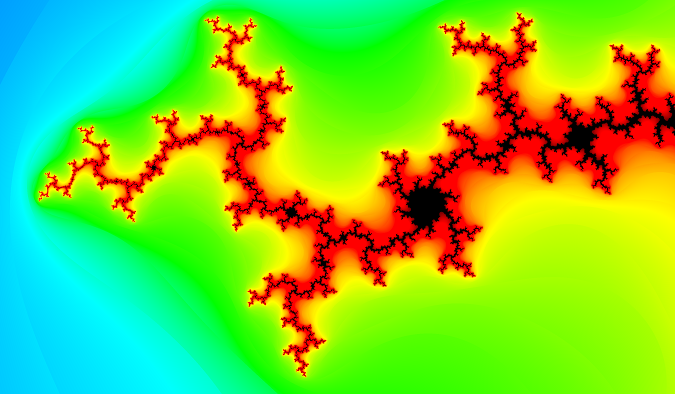

|
Esileht
|
Minust
|
Huvid
|
Eesmärgid
|
Kontakt
|
Üks minu huvidest on matemaatika. Allpool on toodud osa Mandelbrot'i hulgast:

mis ma kujundasin oma poolt tehtud Pythoni scriptiga.
Natuke statistikat, mis näitab kui palju aega võttis sarnaste pildite genereerimine
| Pikslite arv (megapixels) | Sekundid | Aeg | Faili suurus |
| 3.4 | 121 | 2 min 01 sec | 1.0 MB |
| 18.0 | 697 | 11 min 37 sec | 2.4 MB |
| 187.5 | 7280 | 2 h 01 min 20 sec | 17.3 MB |
| 450.0 | 17470 | 4 h 51 min 10 sec | 38.5 MB |
| 750.0 | 27350 | 7 h 35 min 50 sec | 47.8 MB |